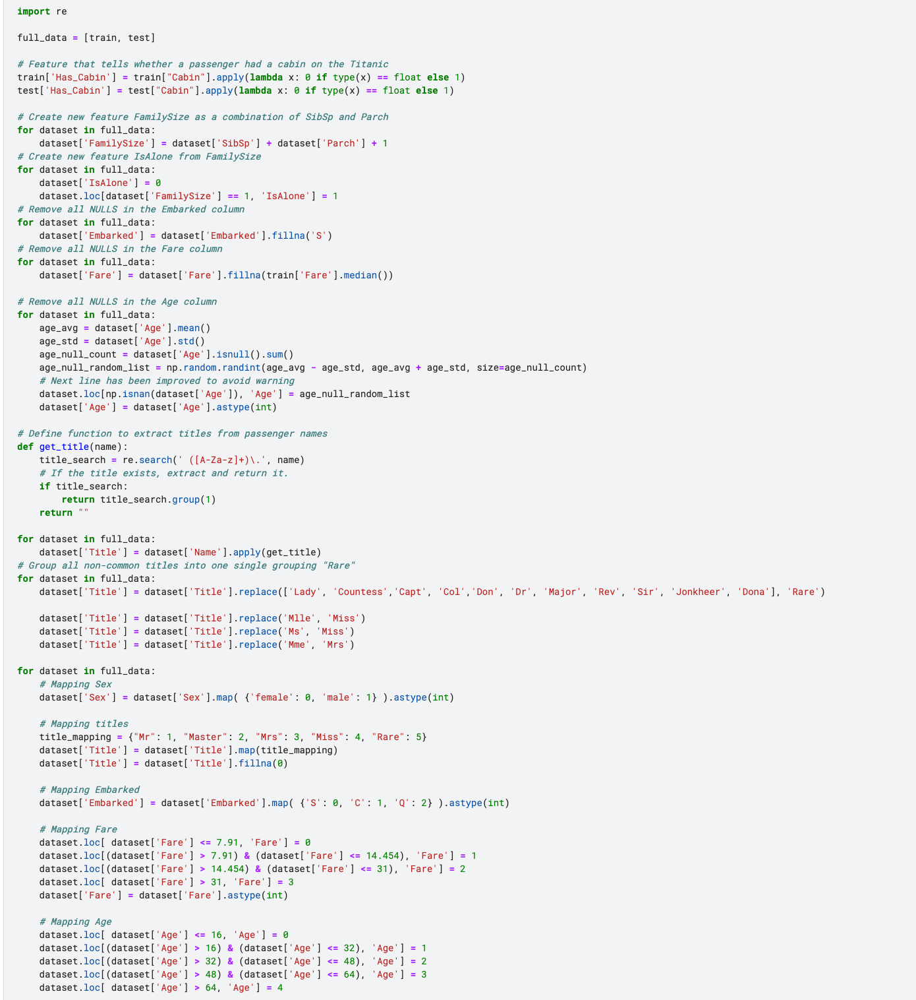
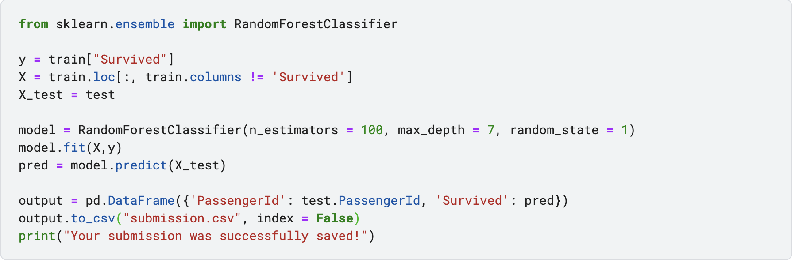
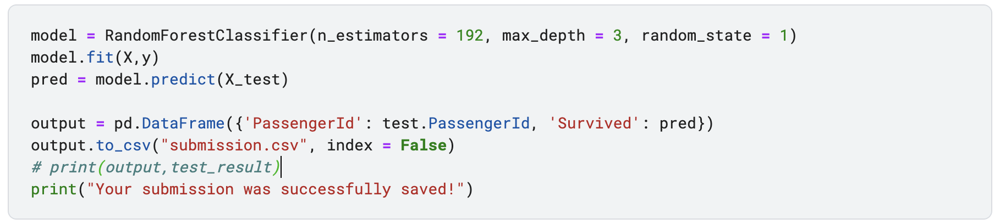
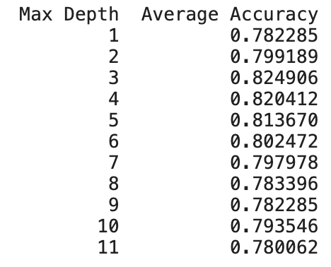
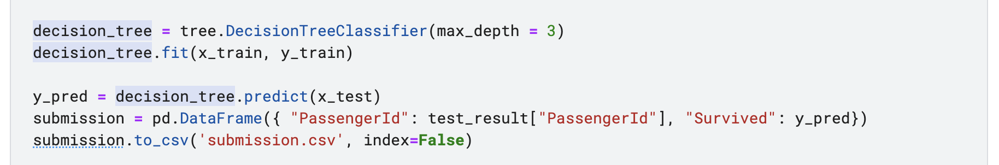
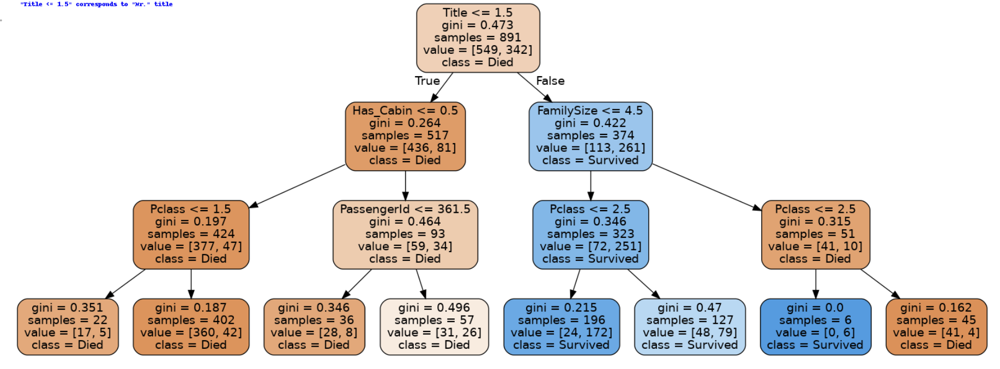

Sumedh Wairagade
Sumedh WairagadeTitanic Dataset Prediction Model
I have followed the tutorial given by the Kaggle, titanic-tutorial by alexisbcook. Also made changes in the algorithm by changing the number of estimators (Number of trees in the Forest) and the max depth (depth of the tree) attributes of the algorithm. Random Forest Algorithm uses a meta estiamtor which fits the data in given number of base estimator. According to the tutorial our model was predicting the correct values for 370 rows from the test after cleaning the dataset. But if we change the values of the Number of estimators to 192 and the Max depth attribute to 4, we get 397 correct prediction values for the given test set
Motivation:
This was the introduction assignment for our Data Mining class, where we were introduced to various Machine Learning Models and how the different models are used to perfrom various activities. For example, we used Random Forest Classifier with base estimator as Decision Tree Classifier and gave the number of estimators we want to use for our model along with the depth of each estimator.
Initial step:
First we take a quick look at our dataset where we check what we are working with and make adjustments to the data if needed. In our case, we had to modify our dataset, our dataset has Has_Cabin attribute which has not integer values which we modified to 0's and 1's. Then we added SibSp attribute and Parch attribute to 1 to make a new attribute FamilySize. Then we checked if the person is travelling alone and made a new flag attribute IsAlone with integer boolean datatype 0 and 1. Then we removed all the null values from the Embarked and filled them with 'S', which represents Southampton. Then we filled all the na values in the Fare column with the median of the values in the Fare column. Removed all the NULL values in the Age column and used the random number generator using mean and the standard deviation of the Age column. Then we also mapped the Sex attribute as 0 for all the females and 1 for all the males. Then finally we dropped some attributes from the table, Name, Ticket, Cabin, SibSp.
Second Step:
We import Random Forest Classifier as tutorial asks us to and run the algorithm through default settings. Then we adjust the number of estimators and the max depth of the estimator such that we could get more correct predictions resulting in higher accuracy. We can check how our algorithm is doing after changing the attributes of the function.
 I also checked if our Decision Tree Classifier is implementing with the same accuracy as our data size is small. So, we define a function to evaluate gini index in our Decision Tree. Now we import Kfold from sklearn to find the optimum depth of the tree to build better model.
We can see that the maximum average accuracy was gained at max depth 3, then it started to decline again. So, we build a tree having max depth 3 and it gave me good results on fiting my data and performing prediction my test Data. I gained accuracy of 82.38% on my test data.
Conclusion and Future Scope:
I experienced alot during this assignment and got to know how I can tune my model to perform better. Also we made an image using PIL library in python-notebook which we have shown below.
Try competitions on Kaggle it is good for practicing your skills and keeping uptodate with current technology.